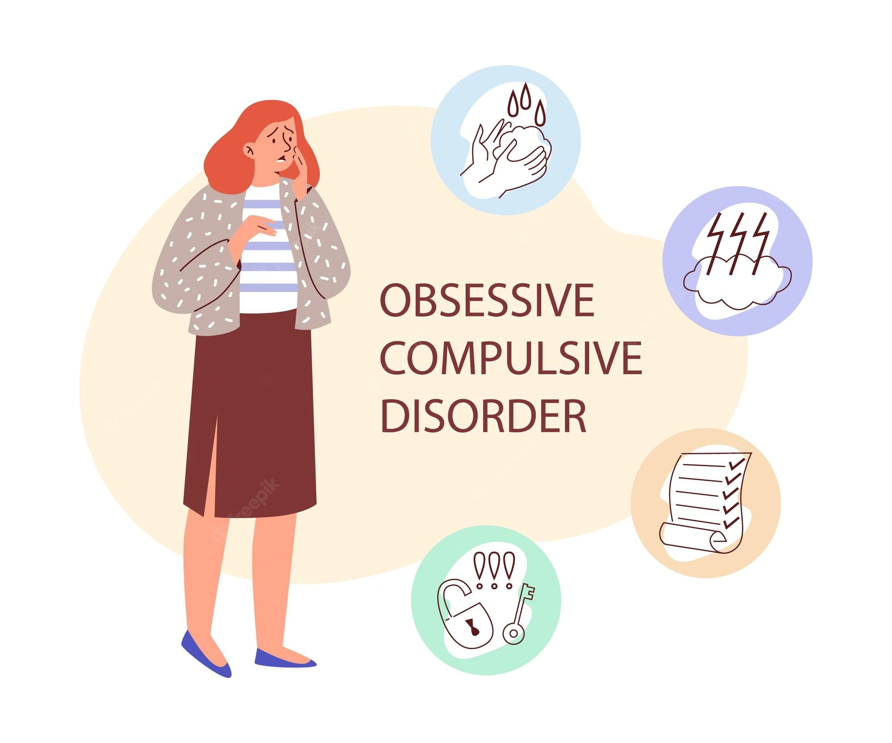

Obsessive Compulsive Disorder

OCD
OCD are characterized by obsessive, unwanted thoughts or urges that cause certain, often unusual and repetitive behaviors, called compulsions. These compulsions temporarily ease stress, but engaging with compulsions often makes obessions worse, which then makes compulsions worse and starts a vicious cycle that increases anxiety. Obessions and compulsions can be over a ton of different things, but certain issues are more common, such as focus on cleanliness. Symptoms include:
- excessive doubt
- having a hard time with uncertainty
- needing order and balance
- unwanted aggressive, violent, sexual, or biased thoughts or mental images (that often go against personal values, causing distress)
- repeatedly checking something
- repeatedly counting
- fear of contamination
- stress when things are out of control or not adhering to personal preference
- intrusive or impulsive thoughts (which are rarely acted upon)
- needing structure and routine
- needing reassurance
- repetitive thoughts, such as repeating a certain word or phrase over and over
- actively replacing bad thoughts with good ones
- excessive anxiety over certain fears or themes
- being unable to refuse giving in to compulsions